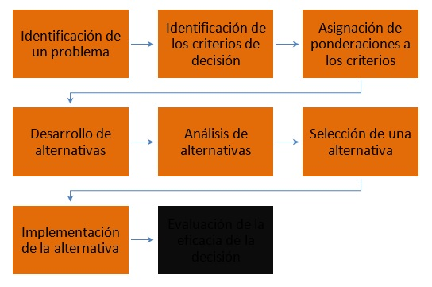
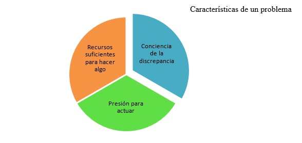

1.3.1 Fases del proceso de toma de decisiones. Situaciones o contextos de decisión: ambiente de certidumbre, ambiente de riesgo y ambiente de incertidumbre
La siguiente figura ilustra el proceso de toma de decisiones como un conjunto de ocho pasos:

Elaboración propia
Paso 1. Identificación de un problema
El proceso de toma de decisiones comienza con la presencia de un problema o una discrepancia entre dos estados de cosas, el ya existente y el que se desea alcanzar.
La identificación de problemas no es un paso sencillo ni insignificante en el proceso de toma de decisiones. Antes de que algo pueda caracterizarse por el problema, es necesario que los gerentes estén conscientes de que existe una discrepancia, que estén presionados a actuar y que cuente con los recursos necesarios para entrar en acción.

Elaboración propia
¿Cómo se percatan los gerentes de que existe una discrepancia?
Para averiguarlo hacen una comparación entre el estado de cosas actual y una norma de algún tipo. ¿Cuál es esa norma?
Puede ser el rendimiento logrado en el pasado, metas establecidas con anterioridad, o bien, el rendimiento de otra unidad de otras organizaciones.
Paso 2. Identificación de los criterios de decisión
Una vez que se ha identificado un problema que requiere su atención, se necesita identificar los criterios de decisión para resolverlo. Esto significa que los gerentes deben determinar lo que es pertinente para tomar una decisión.
Independientemente de que lo declaren explícitamente o no, todas las personas que toman decisiones se basan en ciertos criterios que le sirven de guía.
Paso 3. Asignación de ponderaciones a los criterios
La persona que está a cargo de tomar las decisiones debe ponderar cada elemento a fin de asignarle la prioridad correcta en la decisión. ¿Cuál es el procedimiento para ponderar criterios? Una aproximación sencilla consiste simplemente en conceder al criterio más importante una ponderación de 10, y a continuación asignar las ponderaciones de todos los demás tomando como base ese estándar. La idea es actuar de acuerdo con las preferencias personales para asignar el grado de prioridad en su decisión, y también para indicar el grado de importancia de estos.
Paso 4. Desarrollo de alternativas
El cuarto paso requiere que la persona que toma las decisiones elabore una lista de las alternativas viables con las que se podría resolver el problema.
Paso 5. Análisis de alternativas
Después de identificar las alternativas, la persona a cargo de tomar la decisión debe analizar críticamente cada una de ellas. Las fortalezas y debilidades de cada alternativa resultan evidentes cuando se comparan con los criterios y ponderaciones establecidos en los pasos 2 y 3. Cada alternativa es evaluada en términos de esos criterios
Paso 6. Selección de una alternativa
Aquí se presenta el acto decisivo de elegir la mejor alternativa de las que aparecen en la lista y fueron evaluadas. Se han determinado todos los factores para la decisión, se ponderan correctamente, identificando las alternativas viables. Ahora solo se tiene que escoger la alternativa que produjo la calificación más alta en el paso 5.
Paso 7. Implementación de la alternativa
Aquí todavía es posible que la decisión fracase si no se implementa correctamente. Por lo tanto, es aquí donde se pone en práctica la decisión.
La implementación incluye el hecho de comunicar la decisión a las personas afectadas y lograr que se comprometan a ponerla en práctica. Si las personas que deberán poner en práctica la decisión participan en el proceso, las probabilidades de que apoyen con entusiasmo el resultado serán mayores que si solo se les ordena lo que deben hacer.
Paso 8. Evaluación de la eficacia de la decisión
El último paso consiste en evaluar el resultado de la decisión para ver si el problema realmente ha sido resuelto. ¿Se obtuvo el resultado deseado mediante la alternativa elegida e implementada?
¿Qué pasaría si, como resultado de esta evaluación, se percibiera que el problema no ha sido resuelto? El gerente tendría que analizar cuidadosamente la situación para averiguar qué fue lo que falló. ¿Fue incorrecta la definición del problema? ¿Se cometieron errores en la evaluación de las distintas alternativas? ¿Se seleccionó la alternativa apropiada, pero no se implementó en la forma debida? Las respuestas a este tipo de preguntas podrían obligar al gerente a retroceder hasta alguno de los pasos anteriores. Incluso es posible que tuviera que comenzar de nuevo todo el proceso de decisión [6].